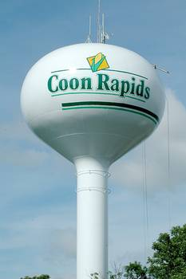
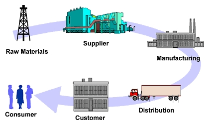

I attended Coon Rapids Bayard High school, I graduated in 2012. Fun fact: My graduating class only had 35 kids!
Here is the link to my highschool website
After high school I started at Iowa State University; where I study Supply Chain Managment
Supply chain management is the streamlining of a business' supply-side activities to maximize customer value and to gain a competitive advantage in the marketplace. Supply chain management (SCM) represents an effort by suppliers to develop and implement supply chains that are as efficient and economical as possible. -Investopia.com
For information on Iowa State's Business college, click here
>>>>>>> Stashed changes